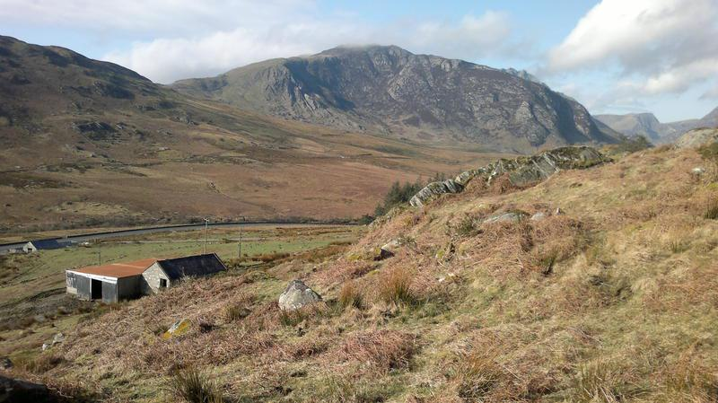
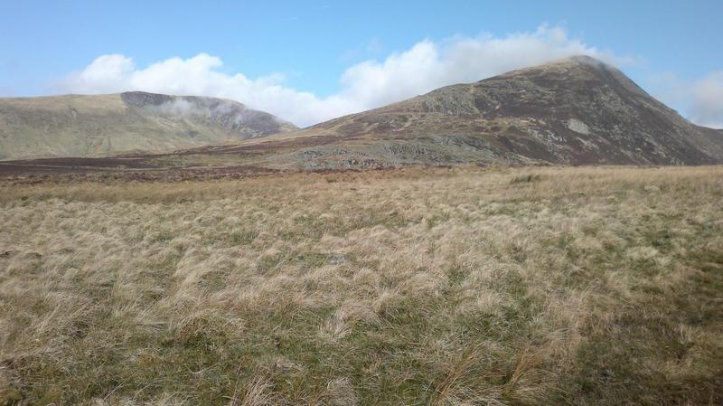
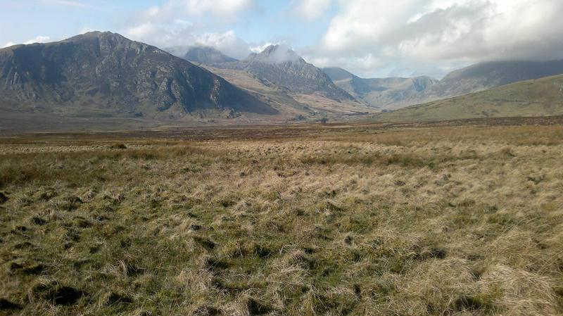
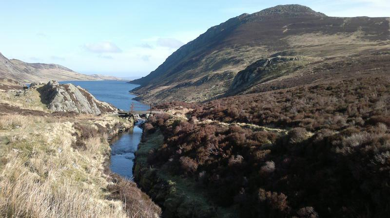
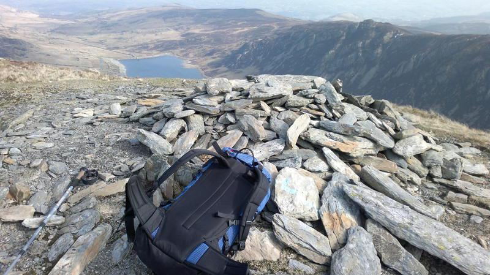
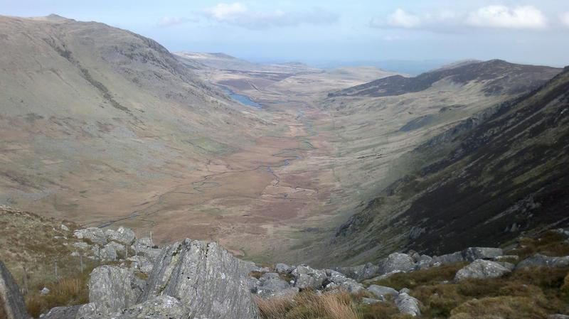
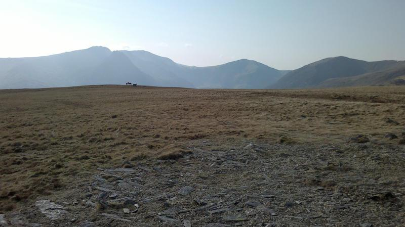
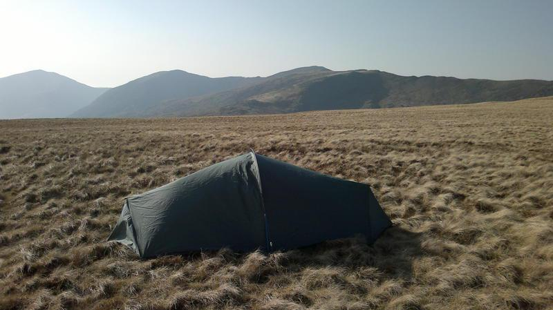
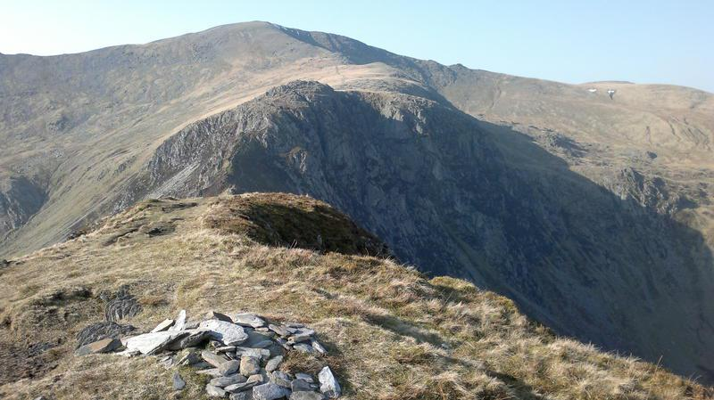
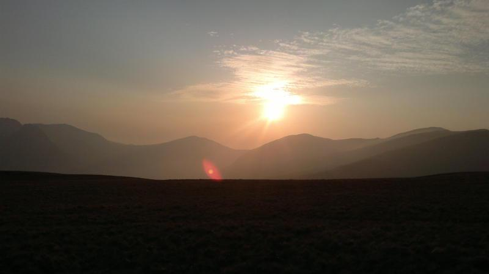

I had wanted to do an overnight trip since Christmas. I had planned to
spend at least one night camping high in the snow. Unfortunately, this
year the winter seems to have come and gone with almost no serious
snow in North Wales. Not only has there been very little snow, but
there has been lots of wind and rain, with almost no settled good
weather.
Last Friday MWIS was predicting early fog in the valleys with the tops
clearing later in the day. This looked like being my only opportunity
to get out for a while. However, I had to be in Chester by midday on
the Saturday to collect my son from his rowing training.
Gallt yr Ogof

I packed the truck on Thursday night as I planned to make an early
start. I dropped the children off to catch the school bus just after
7:30am and made my way over towards Capel Curig. As I dropped down
from the A5104 towards Corwen I could see the predicted fog in the
valley. Luckily, it was only a small patch and I soon ran into clearer
weather.
I parked up behind Joe Browns in Capel Curig and began packing my
sack. Amazingly I didn't seem to have forgotten anything, until I went
to get my boots. In an instant Victor Meldrew moment, I realized that
I had left them at home. Given the problems I have finding anything I
like and the fact that I didn't need a new pair, I ruled out going
into the shop to buy a new pair. I was wearing my Inov8 Roclite 295,
which I often use on the mountains. As it was the beginning of March,
the ground was going to be very wet and I don't really like getting
wet feet. I didn't really have much choice, so I set off along
Telford's old A5.
Cloud Clearing from Pen Llithrig y Wrach and Pen yr Helgi Du

The plan was to repeat v-g's route over Pen Llithrig y Wrach and Pen
yr Helgi Du. I am hopeless at estimating route times, but I was happy
that I could make it back from the summit of Pen yr Helgi Du to the
centre of Chester by twelve o'clock the next day. Thus the plan was to
camp on the summit of Pen yr Helgi Du and make an early start on
Saturday.
Tryfan and the Glyders

As I tramped down the road, MWIS was proving accurate and the clouds
around the summits began to disperse. I crossed the A5 and began to
climb up towards Llyn Colwyd. There were some wet areas, but by
hopping about a bit I managed to keep my feet dry. I got the camera
out to take some photos. I had checked the battery a couple of days
ago, but in the intervening time Anne had been taking dozens of photos
of stuff she wanted to sell on eBay. So when I switched the camera on
the battery died immediately. Luckily, I had my phone, which has a
reasonable camera.
Llyn Colwyd

I stopped to fill my water bottles from the stream that runs down into
the reservoir and began to make my way towards Pen Llithrig y
Wrach. On the way I noticed several big patches of frogspawn in pools
on the path. I hope there aren't any severe frosts in the next few
weeks.
Finding the start of the path up the south ridge of Pen Llithrig y
Wrach was problematic. I chose a fairly direct route up the flank to
join the ridge. Unfortunately, this involved crossing an area of
quaking bog and my feet were soon soaked. No matter, it was a superb
Spring morning with great views in all directions. I continued up
steep grass and heather and I didn't really find the path until
shortly below the summit plateau. It was then I spotted two people
descending, who were actually on the path, so I joined it for the
final hundred feet or so onto the plateau.
Frogspawn

I was planning to eat lunch at the summit, but there was a very cold
breeze, so I munched on a Kit Kat while I descended towards Bwlch y
Tri Marchog, where I found a sheltered spot to eat the other Kit Kat
and some biscuits. Suitably fortified I began the slog up towards Pen
yr Helgi Du.
It was only about 1:30pm when I arrived at the summit and the whole of
the Carneddau were bathed in the early afternoon sun. It was very
tempting to carry on up towards Carnedd Llewelyn, but I knew if I did,
I would have to make the early part of the descent in dark before dawn
dark in order to get back to the car in time. As subsequent events
proved, it was lucky that I decided not to carry on.
Pen Llithrig y
Wrach
*
*
I pitched the tent near to the summit, while being watched by a group
of wild ponies a few yards away. There was a bit of a breeze, but MWIS
had predicted that there would be very little wind for the rest of
today or on the Saturday morning. Once I had pitched the tent, I made
up a Bewell hot porridge and sultanas and drank a big mug of hot
chocolate. I spent the rest of the afternoon wandering round the
summit area and enjoying the afternoon sun. Wandering towards a pool I
saw what looked like a cairn. It seemed a funny colour and as there
were no rocks nearby and I wondered why someone had bothered to build
it there. When I got closer I realized that it was a pile of horse
dung, in a perfect cairn shape.
Cwm Eigiau

Often I arrive at the place where I am going to pitch my tent just
before it goes dark and rush to get everything set up. So it was a
real pleasure to have plenty of time to mooch about. I saw no one on
the main Carneddau ridge and only two people Pen yr Helgi Du. Just
before 6:00pm I was treated to a spectacular sunset over Carnedd Dafydd.
I settled down in the tent to read on my Kindle and catch up with some
podcasts. MWIS had predicted cloudy summits, but minimal wind and no
precipitation for the next morning. Sure enough when I looked out of
the tent later on the mist had come down.
Wild Ponies in the Distance

Sometime in the early hours of the morning, the wind got up and there
was a heavy shower. As the night wore on the showers became more
frequent and by 4:00am it was raining continuously. At 6:00am, in the
pre-dawn light I decided that the best thing to do was to bail and
return to the valley for some breakfast. I had a quick cup of hot
chocolate and some biscuits and packed away the contents of the tent
into my rucksack.
Zephyros on Pen yr Helgi Du

It was time to go outside. I only had my shirt, a Rab Generator pullon
and my Marmot LiteSpeed, plus Mammut Base Jump trews. I pulled my
Lowe Alpine hat down hard to stop it blowing away and got out of the
tent. Outside the rain was just at the point where it begins to fall
as sleet. Inside the tent it didn't sound too windy, but outside the
rain was being blown in sheets. I collapsed the tent as fast as
possible and stuffed the bits into my sack. Much as I like my Zephyros,
the short vertical poles really get in the way when you want to
pack it quickly. Within a couple of minutes I was completely soaked
and starting to feel cold.
Luckily, the long south ridge of Pen yr Helgi Du is easy to
navigate. I was just warm enough when I was moving, but had it been a
few degrees colder it would have been very unpleasant. I was relieved
that I hadn't decided to continue up to the summit of Carnedd Llewelyn
the previous afternoon. Finally I dropped out of the clag and could
see the valley below me. I hadn't really planned my descent, thinking
that I could cut across back towards Llyn Colwyd and reverse my route
of ascent.
Craig yr Ysfa and Carnedd Llewelyn

However, I was now operating Plan "B" - get down to the road as fast
as possible. It turns out that this was exactly the route followed by
v-g. My main concern was how to cross the stream, so I could get back
on the old A5, without going all the way down the road to the camp
site. However, when I emerged onto the main A5 opposite Helyg, there
was an obvious path with a couple of bridges to get over the stream
and back onto the old road.
I arrived back in Capel Curig about 9:15am. As soon as I stopped
walking I began to feel very, very cold. The car park was fairly
crowded with people setting off for the day, but I just wanted to get
into some dry stuff as fast as possible. I stripped off behind the
truck and put on my dry clothes. Several old ladies fainted and the
rest of the crowd grinned.
Sunset over Carnedd Dafydd

Once inside the truck, with dry clothes on, I still couldn't get
warm, even with the heater on the "Chernobyl Meltdown" setting. I
realized that in the last 24hrs I had only eaten two tea cakes, two
Kit Kats, some porridge and half a packet of biscuits. The problem was
lack of food, so I put the truck on auto-pilot and set off for Pete's
Eats. After a large breakfast, I felt much better and I even made it
to Chester just before midday.
I learnt a couple of things from the trip. First I don't mind wet feet
anything like as much as I though I did. In fact most of the time they
didn't feel wet, although my socks were still damp. I might try
walking in trail shoes and giving up boots completely. Second,
although I could have completed the trip as a day walk and avoided
getting soaked, I really enjoyed the time I spent just mooching about
near to the tent. As the days get longer, I would like to plan some
trips where I spend less time walking and more time relaxing around
the tent.


{kind=link}
{kind=link}
{kind=link}
{kind=link}
{kind=link}
{kind=link}
{kind=link}
{kind=link}
{kind=link}
{kind=link}
{kind=link}
{kind=link}
{kind=link}
{kind=link}
{kind=link}
{kind=link}
{kind=link}
{kind=link}
{kind=link}
{kind=link}
{kind=link}
{kind=link}
{kind=link}
{kind=link}
{kind=link}
{kind=link}
{kind=link}
{kind=link}
{kind=link}
{kind=link}
{kind=link}
{kind=link}
{kind=link}
{kind=link}
{kind=link}
{kind=link}
{kind=link}
{kind=link}
{kind=link}
{kind=link}
{kind=link}
{kind=link}
{kind=link}
{kind=link}
{kind=link}
{kind=link}
{kind=link}
{kind=link}